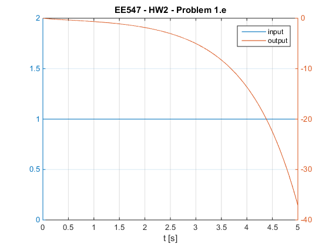
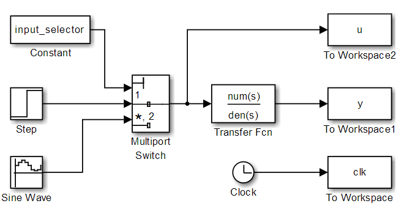
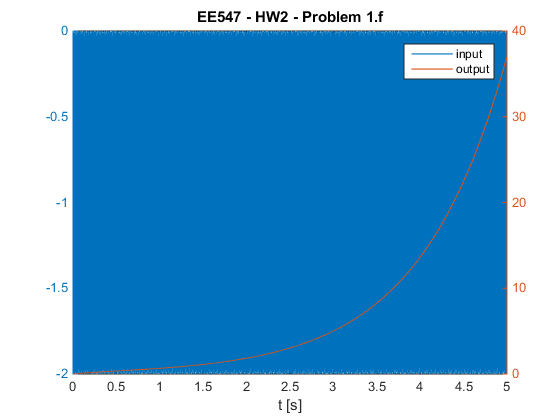
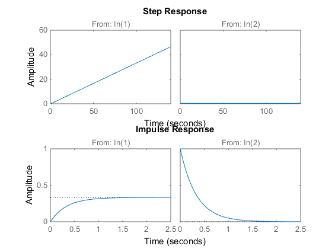
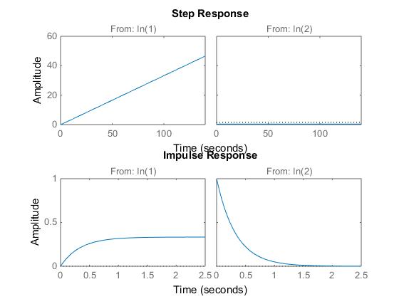

EE547 - HW2
prepared by Paul Adams
Contents
Initialization
close all clear syms xd x x1d x2d x1 x2 u y s x_ini = [0.05; 0.05]; dt = 0.01; t = 0:dt:10-dt; fs = 2000; %
Problem 1
Part 1.a
Derive the state-space representation of this system
x = [x1; x2]; xd = [x1d; x2d]; A = [0, 1; 3, -2]; B = [0; -1]; C = [0, 1]; D = 0; xd = A*x + B*u; y = C*x + D*u; fprintf('x dot is \n') pretty(xd) fprintf('y is \n') pretty(y)
x dot is / x2 \ | | \ 3 x1 - u - 2 x2 / y is x2
Part b
Show the details of inversion of matrix A.
A_det = det(A); A_ = zeros(2); if A_det == 0 error('A is not invertible') else % swap element (1,1) with element (2,2) A_(1, 1) = A(2, 2); A_(2, 2) = A(1, 1); % flip sign of elements (1, 2) and (2, 1) A_(1, 2) = -A(1, 2); A_(2, 1) = -A(2, 1); % multiply reciprocal of determinant of A by the new A_ A_inv = 1/A_det*A_; % check result if ~isequal(A_inv, inv(A)) error('Matrices are not equal!') end end
Part c
Show the details of deriving the transfer function of this system
G = C*inv((s*eye(2) - A))*B + D; [num, den] = numden(G); num = sym2poly(num); den = sym2poly(den);
Part d, e
Create a Simulink model of this system by using the Simulink blocks shown in Figure 1. Please simulate the model created in 1(c) and plot the output signal y when input is a unit step function starting at t = 0, i.e., u(t) = 1, t ? 0. Explain what you discover from the output plot.
input_selector = 1; % select step input t = sim('hw2S.slx', 5); figure plotyy(t, u, t, y) xlabel('t [s]') legend({'input', 'output'}) title('EE547 - HW2 - Problem 1.e')
Note
The system is unstable
Simulink model

Part f
Please simulate the model created in 1(c) and plot the output signal y when input is a biased sine function: u(t) = -1 + sin(1000*t).
input_selector = 2; % select sine input t = sim('hw2S.slx', 5); figure plotyy(t, u, t, y) xlabel('t [s]') legend({'input', 'output'}) title('EE547 - HW2 - Problem 1.f')
Problem 2
Part 2.a
Please derive the transfer functions of these two systems.
A1 = [0, 1; 0, -3]; B1 = [0; 1]; C1 = [1, 0; 0, 1]; D1 = [0; 0]; [num1, den1] = ss2tf(A1, B1, C1, D1); A2 = [-7.5, 2.5; -13.5, 4.5]; B2 = [2; 4]; C2 = [-2, 1; 1.5, -0.5]; D2 = [0; 0]; [num2, den2] = ss2tf(A2, B2, C2, D2);
Note
The system transfer functions are equivalent within double precision error
Part 2.b
Please plot the outputs of these two systems with respect to step input and impulse input.
sys1 = tf({num1(1, :), num1(2, :)}, den1);
sys2 = tf({num2(1, :), num2(2, :)}, den2);
figure
subplot(211), step(sys1)
subplot(212), impulse(sys1)
figure
subplot(211), step(sys2)
subplot(212), impulse(sys2)
  Part 2.c
Based on the previous two steps, can you conclude these dynamic systems are zero-state equivalent? Yes they are zero-state equivalent. Their transfer functions are approximately equivalent
Part 3
a) Your operation system and MATLAB version. Win 7 64-bit, Matlab R2014b b) Download of MinSeg supporting toolbox. worked using targetinstaller, though had to be on company network to negotiate license server authentication c) Driver installation. Happened automatically d) The problems encountered during installation, for example, failure to select correct driver and compatibility between your operation system and MATLAB. e) Compiling of function blocks. Only works with MPU* source in working directory.